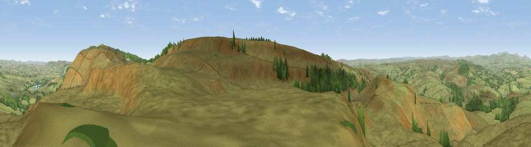

Viewpoint near Hepple
#7139 in England · top 20% of its area beats it · near HeppleThe view, rendered

A 360° render of this exact spot computed from the terrain model, tree cover and land cover — summer colours, afternoon light, calibrated against photographs of famous viewpoints. Real trees, hedges and buildings will differ in detail.
The panorama
Grey silhouette: terrain skyline in each direction (720 bearings, Earth curvature and refraction included). Dashed green: skyline with trees (+15 m) and buildings (+8 m) as obstacles. Blue strip: how far the ground is visible on each bearing.
Where the view opens
Wedge length = distance to the farthest visible ground on that bearing (vegetation-aware). Rings at 10, 25 and 50 km.
What fills the view
93% grassland · 6% woodland · 1% cropland
Angular shares of the visible panorama (visual magnitude), not map area. Landscape diversity 0.13 (0–1 Shannon).
Key numbers
More beautiful places nearby
The staircase of upgrades: each row has a higher view potential than everything closer. Driving times are estimates from straight-line distance, calibrated against real road routing — check an actual route before setting out.
| Place | Direction | Drive | Score |
|---|---|---|---|
| Darden Rigg | SSE · 1 km | ~3 min | 77.0 |
| Viewpoint near Hepple | ENE · 4 km | ~8 min | 82.4 |
| Viewpoint c12273_7856 | NNW · 17 km | ~30 min | 83.7 |
| Viewpoint c12396_7887 | N · 23 km | ~38 min | 85.7 |
| Viewpoint near Chillingham | NNE · 30 km | ~47 min | 88.1 |
| Long Side | SW · 101 km | ~125 min | 89.5 |
| Viewpoint near Easington | SE · 108 km | ~133 min | 90.2 |
| The Knoll | S · 511 km | ~466 min | 91.0 |
55.27052, -2.02948 · source: screening · position refined by local search. Computed location — check access rights before visiting.